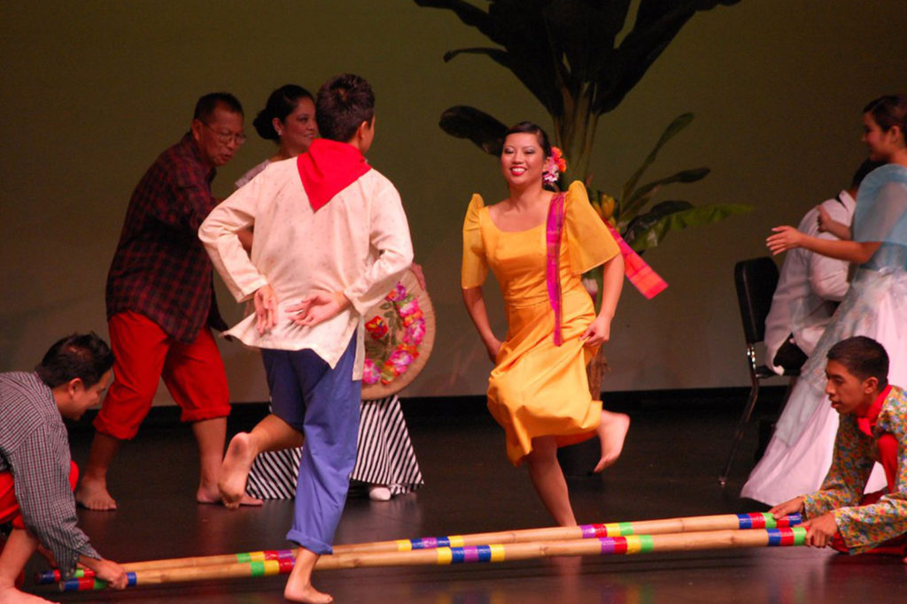
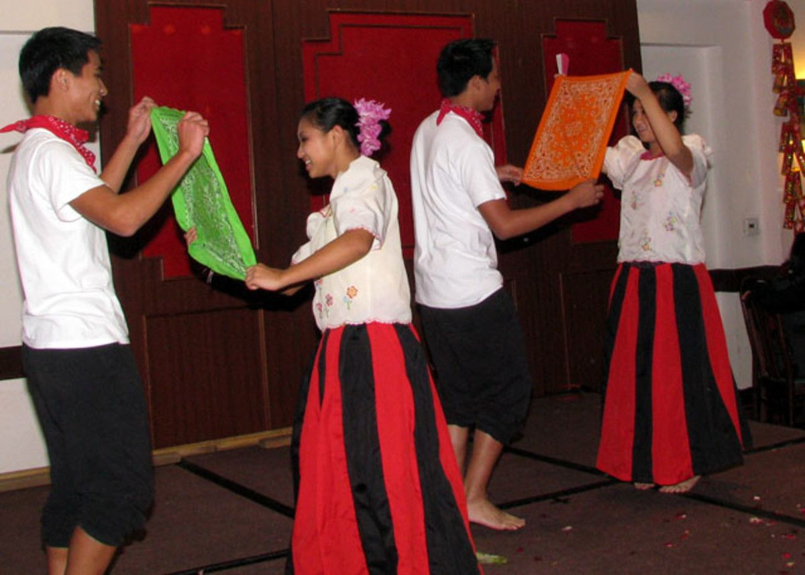
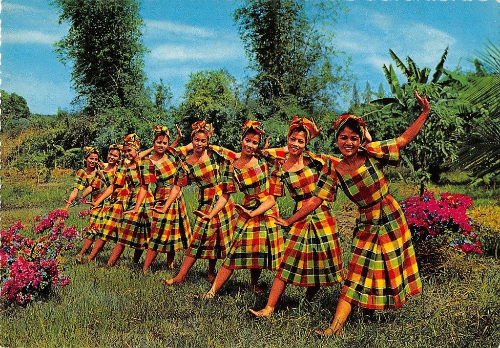
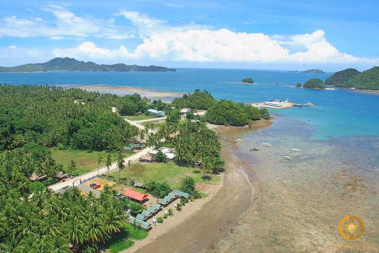
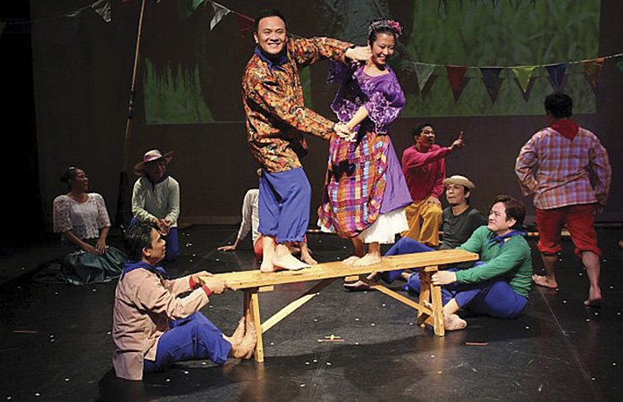
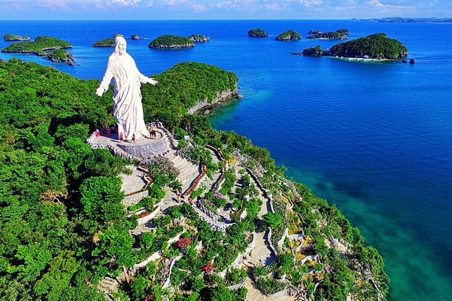
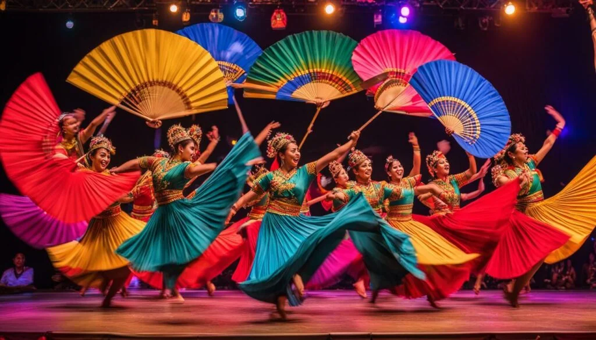
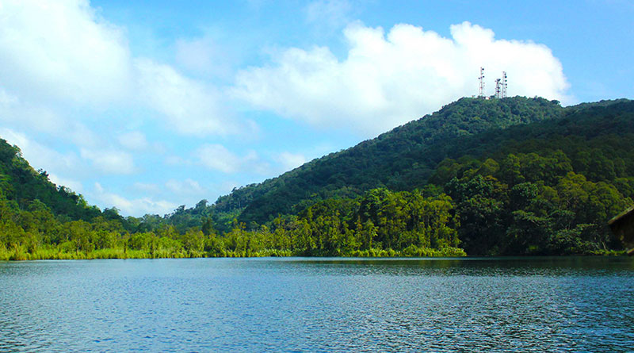

| Dance | Place of Origin | Description |
|---|---|---|
|  |
Leyte, Visayas |
The Tinikling is one of the most popular folk dances in the Philippines, even being considered as the National Dance. The dance involves at least two people beating, tapping, and sliding bamboo poles on the ground and against each other in coordination with one or more dancers who step over and in between the poles in a dance. |
|  |
Panay, Visayas |
The Cariñosa is a traditional Filipino dance which was introduced by the Spaniards during the 17th century. It showcases the blending of Spanish and Filipino cultures, which is a unique aspect of Filipino heritage. It depicts the courtship between a man and a woman during the colonial era. It's usually danced by a pair of dancers—one male and one female—who face each other while dancing. Their movements mimic a game of hide-and-seek. The couple uses this handkerchief to enhance the idea of hiding from each other and while sneaking peeks at each other. |
|  | 
Cantilan, Surigao del Sur |
Itik-Itik is a Philippine folk dance form created by imitating the “movements of a duck” such as wading, flying, and short steps and splashing water on their backs like the ducks do. The dance is popular in towns such as Carrascal, Cantilan, Lanuza, and Carmen for stage performances and social dancing. |
|  | 
Pangasinan, Luzon |
Sayaw sa Bangko (“dance on a bench”) is a folk dance from the Pangasinan province of the Philippines. The dance illustrates the culture that’s been consistently maintained by the inhabitants of Pangasinan - from prior colonisation to post colonisation - despite a few Spanish influences creeping in. A pair of dancers wearing the appropriate attire dance on a narrow bench to symbolise the concepts of trust, balance, and overcoming hardships. They lean, turn, and jump from one side of the bench to the other side of the bench. The benches are slowly stacked up to the point where only one pair dances on the top of the stacked benches. |
|  | 
Lake Lanao Region, Mindanao |
Singkil is a vibrant traditional dance that originated from the Maranao people of Lake Lanao in the Philippines. It is widely recognized as a royal dance, depicting a prince and a princess gracefully dancing between crisscrossed bamboo poles while the man manipulates a sword and shield. |